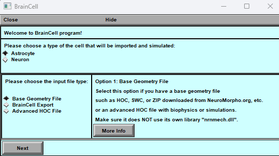
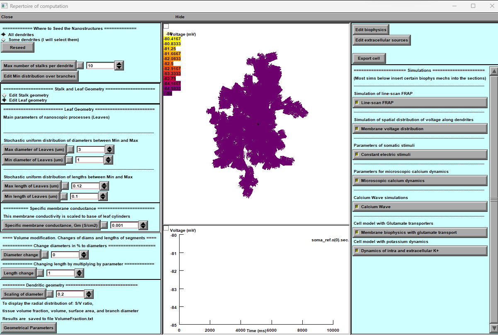
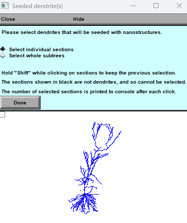
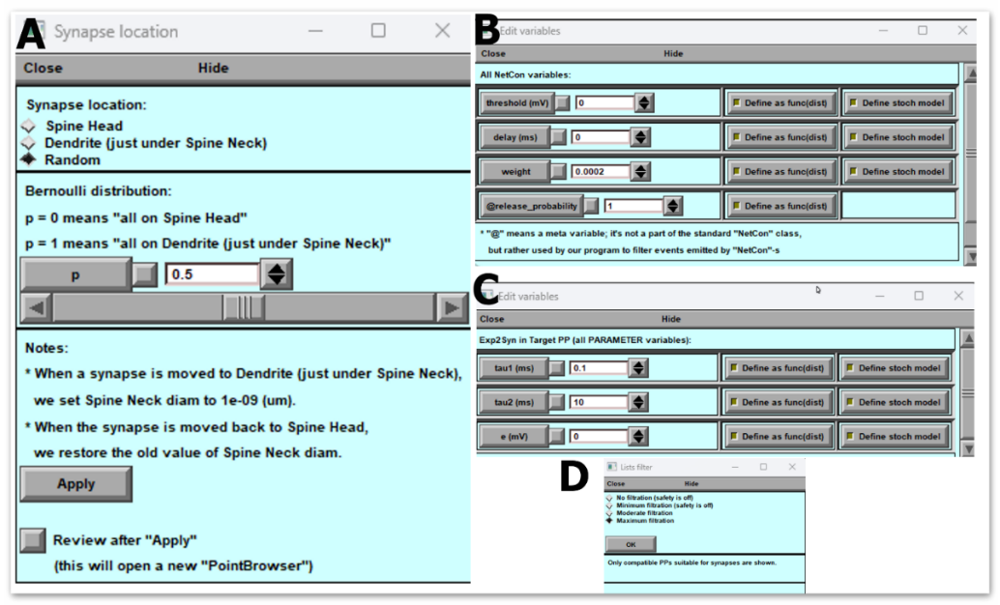
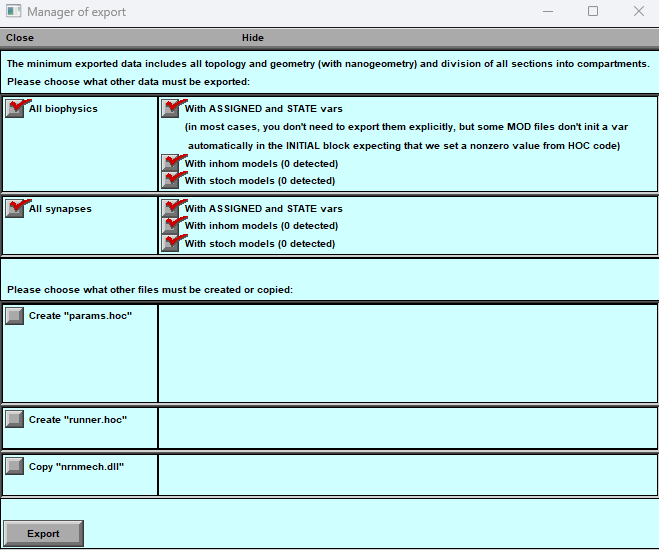
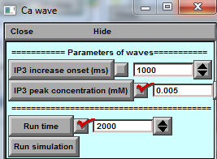
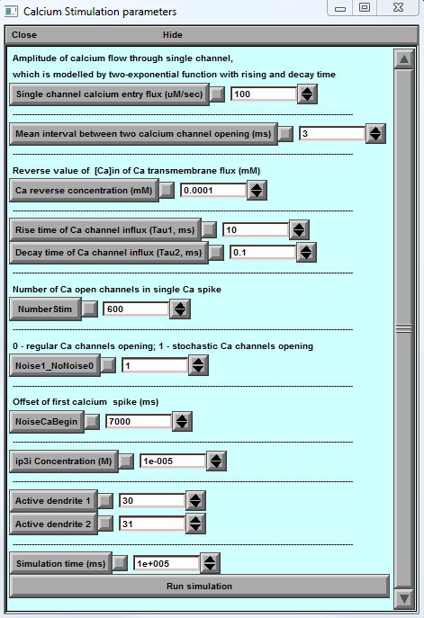

Neuroalgebra
Neuroalgebra
USER GUIDE
BRAINCELL 1.0.
Brain cell in silico
© University College London, MIT licence
01/11/2023
TABLE OF CONTENTS
Table of Contents {#table-of-contents .TOC-Heading}
INTRODUCTION [4](#introduction)
Unpacking and Running BrainCell [5](#unpacking-and-running-braincell)
Troubleshooting Steps: [7](#troubleshooting-steps)
The strategy of building the model: summary [7](#the-strategy-of-building-the-model-summary)
GETTING STARTED [9](#getting-started)
Installing and running BRAINCELL [9](#installing-and-running-braincell)
Setting up and launching [9](#setting-up-and-launching)
Introductory menu [10](#_Toc149640263)
GENERATING COMPLETE ASTROCYTE MORPHOLOGY [11](#generating-complete-astrocyte-morphology)
Generating/downloading astrocyte stem tree [11](#generatingdownloading-astrocyte-stem-tree)
The geometry of nanoscopic processes [13](#the-geometry-of-nanoscopic-processes)
Nano geometry modification. [22](#nano-geometry-modification.)
The arrangement of spines. [22](#the-arrangement-of-spines.)
Manager of biophysical mechanisms. [26](#manager-of-biophysical-mechanisms.)
Adjust the spatial distribution of mechanisms. [27](#adjust-the-spatial-distribution-of-mechanisms.)
Synapse distribution. [28](#synapse-distribution.)
Visualisation of Spatial Heterogeneity [30](#visualisation-of-spatial-heterogeneity)
Stochasticity Editor [31](#stochasticity-editor)
Manager of synapses. [33](#manager-of-synapses.)
Synaptic structure. [35](#synaptic-structure.)
Export cell model. [41](#export-cell-model.)
Structure of export file. [42](#structure-of-export-file.)
Re-import cell model. [47](#re-import-cell-model.)
CA1-neuron voltage [48](#ca1-neuron-voltage)
Probing membrane mechanisms of brain cell [51](#probing-membrane-mechanisms-of-brain-cell)
Membrane voltage landscape [52](#membrane-voltage-landscape)
Modelling intracellular calcium dynamics [53](#modelling-intracellular-calcium-dynamics)
Ca2+ wave simulations [53](#ca2-wave-simulations)
Simulating microscopic Ca2+ events [55](#simulating-microscopic-ca2-events)
Simulating glutamate transporters [56](#simulating-glutamate-transporters)
INTRODUCTION
Getting Started with BrainCell:
Welcome to the user manual for BrainCell!
BrainCell is a powerful simulation tool designed to evaluate the multi-scale morphology of astroglia and neurons, allowing you to create realistic multi-compartmental biophysical models of brain cells. With BrainCell, you can explore and analyse these models using the NEURON/Python computational environment, which provides a wide range of biophysical and cellular mechanisms. The primary objective of using BrainCell is to assist in the mechanistic interpretation of experimental observations in brain cells. This user manual will guide you through the features and functionality of BrainCell, enabling you to effectively leverage this tool and enhance your understanding of brain cell behaviour.
Key System and Software Requirements
To ensure a smooth experience with BrainCell, please ensure that your OS meets the following requirements:
-
PYTHON (version 3.2 or later) - Download from https://www.python.org/downloads/
-
NEURON (version 7.2 or later) - Download from https://neuron.yale.edu/neuron/download
BrainCell Software: First-Time Installation Guide
Congratulations on choosing BRAINCELL, a powerful software for neural simulations. Follow the step-by-step instructions below to successfully install BRAINCELL on your Windows operating system. This guide will assist you in setting up the software and address common installation issues. Please note the following: Ensure you have administrative privileges on your system.
Unpacking and Running BrainCell
(For Users with NEURON and Anaconda Installed):
- Start with BRAINCELL
- - Download the BRAINCELL software package from
[(https://github.com/LeonidSavtchenko/BrainCellNew]{.underline}).
- - Extract the contents of the downloaded archive to a preferred
location (e.g., c:\my\braincell).
- - Ensure that all files and folders within the BRAINCELL
directory are extracted.
- Configuring File Permissions and Initiating NEURON Compilation
- For Windows 11 users, it's important to ensure that any *.exe file
in the NEURON directory, specifically located at c:\nrn\bin\, operates with administrative rights. However, for users with a version of Windows < 11, this step is not required. To achieve this, follow the steps outlined below:
- Updating File Properties:
- Navigate to the NEURON directory c:\nrn\bin\ and locate the
*.exe files. Adjust the properties of each *.exe file with administrative rights.
- Run BrainCell
- Executing the init. Hoc / or init.bat. You can find this file in the
directory path ...\init.hoc.
- Compiling NEURON .mod files:
- Once you have downloaded BrainCell, it will be ready to run.
However, if you make any changes or add new mod files, you must activate build_mechs.bat to compile the NEURON *.mod files. This step is essential to ensure the proper functioning and integration of the NEURON modules into your system.
- Running PS Scripts on Windows
- If your Windows configuration restricts the execution of batch (bat)
files, you can opt to run PowerShell (ps1) files instead. Windows, by default, imposes restrictions on the execution of PS1 files. To overcome this limitation, follow the steps below:
- Open PowerShell in administrator mode. Run the following command:
Set-ExecutionPolicy -ExecutionPolicy Bypass -Scope CurrentUser
This command bypasses the execution policy for the current user, allowing PS1 files to run without restrictions.
This action is a one-time requirement; you will not need to repeat it in the future. After performing this step, you can effortlessly run PS1 files.
- Running BrainCell
- Open the c:\my\braincell directory.
- Double-click on the "init.bat" file to execute it.
- This action should launch Neuron and open the BRAINCELL window.
- In the BRAINCELL window, you can select either "Astrocyte" or "Neuron" per your requirements.
Unpacking and Running BRAINCELL (For Users without NEURON and Anaconda Installed but with the previous version of Python installed):
If you do not have NEURON and Anaconda installed or are experiencing issues with BrainCell after their installation, please follow these step-by-step instructions to set up NEURON with Anaconda correctly:
**1. Creating a New Windows User**
- Press the Windows key + R simultaneously to open the "Run" dialogue box.
- Type "netplwiz" and click OK to open the User Accounts window.
- Select "Add..." to create a new user account.
- Create a local user account rather than a Microsoft account in Advanced mode.
- Complete the user creation process by following the on-screen instructions.
Skip the New User Creation:
(Note: If you do not have any existing Python versions installed, Windows Subsystem for Linux (WSL), or Cygwin on your system, you can proceed without creating a new user account.)
**2. Logging in as the New User**
- Log out of your current Windows user account.
- Log in using the newly created user account credentials.
**3. Installing Anaconda Python**
- Download the Anaconda Python distribution for Windows from the official website.
- Run the installer executable file and follow the installation wizard's instructions.
- Select the default installation options unless you have specific requirements.
- Once the installation is complete, proceed to the next step.
**4. Installing Neuron**
- Download the Neuron software package.
- During installation, choose a destination folder other than the default location (e.g., c:\my\nrn).
- Follow the installation prompts and accept the default options unless instructed otherwise.
- Once Neuron is installed, proceed to the next step.
**5. Unzipping BRAINCELL **
- Download the BRAINCELL software package.
- Extract the contents of the downloaded archive to a preferred location (e.g., c:\my\braincell).
- Ensure that all files and folders within the BRAINCELL directory are extracted.
**6. Adjusting File Permissions**
- In Windows 10/11, navigate to the c:\my\braincell directory.
- Right-click on the "init.bat" file and select "Show more options" or "Properties".
- In the Properties window, scroll to the bottom and locate the "Unblock" checkbox.
- Check the "Unblock" box and click "Apply".
- Repeat the same process for the "build_mechs.bat" file in the same directory.
(This prevents Windows from blocking the execution of these batch files.)
**7. Running BRAINCELL **
- Open the c:\my\braincell directory.
- Double-click on the "init.bat" file to execute it.
- This action should launch Neuron and open the BRAINCELL window.
- In the BRAINCELL window, you can select either "Astrocyte" or "Neuron" per your requirements.
Troubleshooting Steps:
Initial Installation Attempt:
Follow the remaining steps of the installation process as outlined in the user manual. This includes installing Anaconda Python and Neuron, unpacking BRAINCELL, and editing the "init.bat" file as instructed. Adjust file permissions as mentioned in step 7 of the user manual.
Running BRAINCELL:
Execute the "init.bat" file from the "c:\my\braincell" directory to launch BRAINCELL.
If BRAINCELL starts successfully and you can select "Astrocyte" or "Neuron" within the application, you can use the software for neural simulations.
If you encounter any issues during the installation or when running BRAINCELL after following the troubleshooting steps, it is advisable to consult the user manual for further guidance. Additionally, our support team is available to assist you in resolving any technical difficulties you may encounter.
The strategy of building the model: summary
Creating a cell model using BRAINCELL can be a complex process, but here are some general instructions to get started:
-
Basic 3D cell morphology. Go to “NeuronMorpho” (https://neuromorpho.org) and search for the specific type of brain cell you want to model. Once you have found the cell 3D geometry, download it in the appropriate file format (such as SWC, OBJ or ZIP) in the home directory …\BrainCell\Geometry\ either …\Astrocyte or …\Neuron.
-
Open a BRAINCELL and import the 3D structure file.
-
Adjust the scale of the model to the appropriate size for your needs. This may involve resizing, repositioning, or rotating the model to match your desired dimensions.
-
Once you have created a basic 3D model of the brain cell, you can add nanostructures to the model using either an experiment or computer simulation.
-
If you want to add nanostructures to the astrocyte model using an experiment, you will need to use specialised software Astro in MATLAB to manipulate at the nanoscale level.
-
Alternatively, you can use computer simulations to add nanostructures to the 3D cell. These simulations can help you to understand how the nanostructures interact with the brain cell and how they affect its function.
-
Once you have added the nanostructures to the model, you can use the 3D modelling software to visualise the changes and understand how they affect the overall structure and function of the brain cell.
-
Finally, you can refine and optimise the model as necessary to achieve your desired level of accuracy and detail.
-
Overall, creating a brain cell model using BRAINCELL is a complex process that requires specialised software and expertise in 3D modelling and nanoscale science. By following these instructions and utilising the appropriate tools and techniques, however, you can create a highly accurate and detailed brain cell model that can be used for a wide range of scientific and educational purposes.
The outlines of experimental data or approximations required to create a realistic brain cell model.
Here are the details:
-
It is preferable to have a 3D reconstructed tree of main cell processes that can be imported from https://neuromorpho.org in any format. Alternatively, an artificially generated cell arbour can be used, with the branching pattern and branch diameters representing the average (typical) cell from the population of interest.
-
Astrocyte nanostructures are essential, and a sample (20-50) of nanoscopic astroglial processes reconstructed using 3D (serial-section) EM is necessary. The sample should have rendered surface coordinates and will be used to obtain statistical properties of the ultrathin processes to be generated in the model.
-
Neuron nanostructures are also needed, and "BRAINCELL" can automatically generate synaptic spines with different distribution densities, geometries, and contacts with synapses. Synapses can be located both on the spines and directly on the dendrites. The user can select all parameters and control the spines’ geometry complexity.
-
The average tissue volume fraction occupied by astroglia and neurons, as distributed radially from the soma to the cell edges, is also required. This data set can be obtained from two-photon excitation measurements in situ (or from published data).
-
It is necessary to have the mean membrane surface density and surface-to-volume fraction values, which can be obtained from 3D reconstructions of nanoscopic processes.
-
The characteristic I-V curve for the cell of interest, obtained through somatic patch-clamp with square-pulse current injections, is essential. Other available functional data, such as electrical responses to neurotransmitter uncaging or changes in extracellular ion and intracellular calcium wave speed, are optional but helpful.
GETTING STARTED
Installing and running BRAINCELL
Setting up and launching
The latest installation version can be downloaded from
[(https://github.com/LeonidSavtchenko/BrainCellNew]{.underline}).
On the website’s front page (Fig.1a), to download BrainCellNew, press the green key 'Clone or download' and save Download.Zip anywhere on your computer. Then, the archive must be opened, and its content saved on the Host computer (Windows/macOS), keeping the folder structure as described (Fig. 1b).
To start with BRAINCELL, the Host computer must have NEURON (7.0 or later) and Python 3. * Installed.

Figure 1. Screenshot of the BRAINCELL download GitHub page (a) and folder structure of BRAINCELL 1.0 on the Host computer (b).

Figure 2. Introductory menu.
[]{#_Toc149640263 .anchor}Introductory menu: Simulation Cell Configuration
The simulation interface's menu lets you choose between two types of cells: "Astrocyte" and "Neuron." Each cell type has two configuration options: "Base Geometry" or "BrainCell export " and “External Simulations”.
-
Users can create and alter cells with variable 3D and nano shapes by selecting the " Base Geometry " configuration option.
-
Users can select " BrainCell export" from the drop-down menu to save time during simulation trials and upload a pre-existing cell with nanostructures. It's important to note that the shape of the loaded cell cannot be altered. This feature is helpful for those who prefer not to create a new cell for each simulation run.
-
Select “External Simulations” option if you have an advanced HOC file with biophysics or simulations e.g., downloaded from ModelDB.science, and it does use its own library \"nrnmech.dll\.
Select one option for more information.
Astro/ Base. Setting up and running BRAINCELL: Astrocyte configuration.
GENERATING COMPLETE ASTROCYTE MORPHOLOGY
Figure 3. As detailed in the text, control windows are initiated by launching NEURON in the BrainCell environment. The file init.hoc opens three windows: System window (cmd.exe) (a), a window panel to define the gross astrocyte geometry (stem tree, b), and a menu panel to set the density for higher orders of nanoscopic processes ('Leaf number' c) and number of nanostructures per dendrites (‘Max number of stalks’, C).
Generating/downloading astrocyte stem tree
To design a new astrocyte model, the user has to define the basic structure of a dendritic tree using three different options:
Option 1: Click on "Select Library Stem Tree".
Choose to import 3D files in general zip format from the database http://neuromorpho.com. You can upload as many files as you like, but for convenience, placing them in the directory, /Geometry/Astrocyte/New Style is recommended.

Figure 4. Importing 3D Cell Structure. A) The web page of NeuroMorpho displays the 3D shape of a cell. B) Operational BRAINCELL panels providing options to select astroglia morphology.
Alternatively, select a file from the in-house directory …\BrainCell\Geometry\ in SCW or HOC format.
To view a 3D structure of a file, please follow these steps:
-
Select the desired file that contains a 3D structure, pressing “Select library stem tree”.
-
You will be directed to a new window to view the 3D geometry of the selected file and choose the “Astrocyte/New Style” directory and file with 3D structure.
-
If you like the structure, click the "Use this" button to proceed to the next step.
-
If you do not like the structure, you can select another one by clicking the "Import another" button.
-
Once you have chosen the desired 3D structure, you can proceed to the next option by clicking the appropriate “Use this” button.
-
OriginalDendrite sets the number of branches (dendrites in NEURON terminology) on the stem tree. The database NeuroMorpho.org can be used as a guide to the ASTRO-compatible file format. Upon selection, a window panel displays the selected stem tree (Fig. 5a).
If you press "Use this" but change your mind later, don't worry; making a new selection is simple. Press the "Select Library Stem Tree" button again or choose "Select Stem Tree with Endfoot" from the options. If you are confident in your choice, press the final "Start Astro" key. Once you press it, you will not be able to go back.
Another option is to import the 3D geometry.
1. Editing the Endfoot Geometry:
A popup window will appear if you select the "Select Stem Tree with Endfoot" option. This window allows you to modify the geometry of the endfoot (refer to Fig. 5B), providing a menu to set the morphology of the main and the secondary endfoot branches and the local biophysical mechanisms.
2 'Select reconstructed stem tree’ loads the 3D-reconstructed stem tree file. An example in RealAstrocyteSkeleton1.hoc (the directory …/Geometry) shows the reconstructed stem tree of the CA1 astrocyte using the Vaa3D software (Allen Institute, available from
http://www.alleninstitute.org/what-we-do/brain-science/research/products-tools/vaa3d/).
This option also prompts an additional window panel (Fig. 17d), providing a setting for geometrical scaling and the centring of the astrocyte structure at the coordinate origin (to facilitate the positioning of selected cell compartments). The corresponding menu buttons thus include 'X-Y scale (pixel/μm)', 'Z scale (pixel μm)', and 'X-Y shift (μm)'. This window will disappear after any parameter change.
Note: Regardless of the case, a popup window directs you to the directory where the 3D file should be located. Make sure you have downloaded the required geometry file in advance using Neuromorphic.
3. Adding Nano Geometry to the Astrocytic Tree:
Once you have finalised the 3D geometry of the astrocyte, you have the option to incorporate nano geometry into the structure. To achieve this, you can use a file containing nano geometry that you have prepared using the Astro package. Select the "Select Diameter Distribution for Nano Geometry" option or press the "Start Astro" key. The BrainCell module will generate the astrocyte geometry randomly while ensuring it adheres to primary physiological constraints.
We recommend using the "Start Astro" key when initially acquainting yourself with the software program. This will help you familiarise yourself with its functionalities and capabilities.

Figure 5. Operational window panels for the creation of gross astroglial morphology. A) Host computer directory displaying hoc-files with 3D shapes. B) Panel for generating EndFood for astrocytes. The "Biophysical Mechanisms" section can be used to add new cell mechanisms to this part. C) Panel for exporting the 3D structure of the cell. D) Panel for transforming 3D shape. These panels are essential for manipulating and generating astroglial morphology in three dimensions.
NOTE: Before proceeding with further model design, the user must upload the cell stem tree geometry to the designated GEOMETRY directory.
Generating astroglial morphology on the nanoscale
The geometry of nanoscopic processes
Once the stem tree has been downloaded, the next stage is the nanostructure of the astrocyte. The user has two options on the popup window (see below), highlighted in yellow.
Option 1: To download the default nanostructure prepared in advance. Pressing the button 'Diameter distribution for nano-geometry' prompts the user to download a file with the statistics of process diameters produced by the 'Nano (Geometry)' module from the sampled 3D-reconstructed astroglial processes (see above). By default, this option downloads the file testshape.dat_radii_dist.txt (characterising astroglial processes in CA1 stratum radiatum). After that, the user presses the 'Start Astro’ button.
Option 2: To press the 'Start Astro’ button, in which case BrainCell generates nanoscopic processes automatically using the built-in tools.
In both cases, the user can repeatedly adjust key morphometric features of the generated nanostructures. See further details in the chapter Simulating Astrocyte Physiology.
Populating astrocyte tree with nanoscopic processes
The 'Start Astro’ button prompts the main window panel 'Repertoire of computation', critical to modelling complete astrocyte morphology, as described in the sections below.

Figure 6. Astrocyte Main Window
a) Control Panel: This panel provides an array of detailed settings for customizing astrocyte geometry.
b) Simulated Variable: The simulated variable is visually represented on the astrocyte morphology, with the top portion showing the mapping of variables (e.g., membrane voltage) and the bottom showcasing a selected digital output plot.
c) Biophysics, Stochastic, and Extracellular Sources Settings: This section encompasses settings related to biophysical characteristics, stochastic elements, and extracellular sources. It's also where you configure computational scenarios with parameter adjustments.
d) Nanostructure Placement: Users can define the location of nanostructures on the basic dendritic morphology, choosing to position them either throughout the entire astrocyte or exclusively on local dendrites.
e) Nanostructure Density Distribution: This part allows you to set the density distribution of nanostructures, offering options for both uniform and non-uniform arrangements. These settings significantly impact the distribution and behaviour of nanostructures within the astrocyte.
One of the essential features for managing nano geometry is a key located in the upper left corner of the main window (Fig.6 A). This option enables the creation of nano geometry exclusively in a specific location within the dendritic tree. To utilise this feature, follow the steps outlined below:
-
Switching from "All dendrites" to "Some dendrites" option: By toggling this option, you can restrict the nano geometry creation to specific dendrites.
-
Initiating the "Reseed" process: Press the designated "Reseed" key to activate this process. This action will prompt an additional window to appear, providing further customisation options for the placement of the nano geometry.
-
Specifying the desired location: In the newly opened window, you can specify where to add the nano geometry. This level of control allows you to target specific areas within the dendritic tree.
-
Selecting dendrites: Select the desired dendrites in the window. This step involves identifying the dendrites where you intend to generate an astrocyte with localised nanostructures.
-
Finalizing the process: After selecting the desired dendrites, press the "Done" key to generate the astrocyte with the specified nanostructures localised to the chosen dendrites.
NOTE: This option will increase computational requirements, mainly when focusing on very localised processes within the astrocyte. It is beneficial for users who are interested in studying fine-grained details within the astrocyte's local environment.
Panel 'Leaf Geometry' (Fig. 6a, top) provides an option to set up the distribution of cylindrical compartments (leaves) of nanoscopic processes as evenly random (with lower and upper limits) when the experimental statistics on 3D reconstructed processes are not available.
NOTE: This section will be ignored when the latter has already been loaded (see previous section).
Panel 'Stalk Geometry' (Fig. 6a, middle) sets upper and lower limits for the uniform distribution of transitional cylinders of nano geometry. These parameters determine how densely the tissue will be filled with nanoscopic astroglial processes.
Panel 'Specific membrane conductance' sets this value at the button 'Gm (mS/cm2)', which considers all exposed surfaces of the cylindrical compartments. The resting potential of the current is -85 mV. This parameter is defined on the built-in NEURON panel “Distributed mechanism”.
Panel 'Dendritic Geometry' (Fig. 6a, bottom) currently includes 'Branch diameter scaling', which sets the scaling coefficient for the stem tree branch diameters as a function of distance from the soma, according to the average experimental trend. The empirically established formula for the branch diameter d is d~(S(r+1))-1/2 where 'scalingDiam' value S and r is the distance to the soma.
Customizing Cell Geometry
For more profound alterations to the cell's geometry, you have the option to access advanced settings. By selecting "Edit Biophysics" and "Edit Morphology," you gain the ability to modify the morphology of any cell component based on the distance from the soma, following any mathematical rules of your choice. This level of customization empowers you to craft intricate and tailored cell structures to suit your specific research or simulation needs.
NOTE: This panel has to be ignored if a 3D-reconstructed stem tree has been uploaded.
Tissue-filling properties of astroglial morphology
The tissue volume-filling properties and the surface-to-volume ratios of the nanoscopic processes will be determined by the shapes and the effective density of simulated nanoscopic processes, as described in the previous section. Tissue volume filling and other geometry features of the model can be monitored by pressing the 'Geometrical parameters' key (Fig. 6): this opens several window panels displaying various parameters of the modelled cell geometry (Fig. 7). The displayed data are automatically saved to the file …\neuronSims\Text results\VolumFraction.txt.
Below are the key features of the main window:
-
Nano geometry modification: Users can add and modify spines' nano geometry to study the impact of structural changes on neuron behaviour.
-
Biophysical mechanisms addition: The tool enables users to add and change various biophysical mechanisms to neurons to investigate their impact on neuron behaviour.
-
Synapse distribution: The tool facilitates the addition and distribution of different types of synapses on the dendritic tree, enabling the study of the neuron's connectivity and behaviour.
-
Simulation models: Users can choose various modes to simulate the neuron's behaviour accurately. The simulation models include voltage clamp, current clamp, and dynamic clamp.
The neuron simulation tool's main window provides the necessary features to simulate and analyse neuron behaviour effectively.
"Geometric parameters" button
The "Geometric parameters" button allows you to calculate graphs of the main geometric parameters of the cell.
Figure 7. Window panels read the volumetric characteristics for modelled astroglia (launched by the 'Geometrical parameters' button).
From the top left: surface-to-volume ratio distribution, tissue volume fraction, total cell volume (cumulative value with the distance from the soma), total cell surface area, and diameters of primary processes.
The morphometric characteristics of the simulated astrocyte (Fig. 7) are to be compared with the corresponding empirical data obtained using 3D EM reconstructions and two-photon excitation imaging data for the astroglia of interest. The user can evaluate the mismatch and adjust the density of nanoscopic processes (using 'Stalk Geometry' and 'Dendritic Geometry' options where relevant; Fig. 6) correspondingly until an acceptable match is produced. The windows depicting critical geometrical parameters (Fig. 7) can be viewed anytime during modelling.
At the end of this stage, the modelled astroglial morphology is complete (see 'FRAP experiments' below for further subtle morphological adjustments). The user can begin to simulate various astroglia functions while implementing various membrane and intracellular biophysical mechanisms, as briefly explained in the following sections:
-
Nano geometry modification: Users can add and modify spines' nano geometry to study the impact of structural changes on neuron behaviour.
-
Biophysical mechanisms addition: The tool enables users to add and change various biophysical mechanisms to neurons to investigate their impact on neuron behaviour.
-
Synapse distribution: The tool facilitates the addition and distribution of different types of synapses on the dendritic tree, enabling the study of the neuron's connectivity and behaviour.
-
Simulation models: Users can choose various modes to simulate the neuron's behaviour accurately. The simulation models include voltage clamp, current clamp, and dynamic clamp.
The simulation tool's main window provides the necessary features to simulate and analyse behaviour effectively.
Nano Astro. Download previously created astrocyte morphology.
Figure 8. Operational Window Panels for Astroglial Morphology of Pre-existing 3D Astrocyte Structure
A) Download Panel: Allows access to the previously prepared 3D astrocyte structure.
Visual: Display a simple icon or representation of downloading data.
B) Roadmap Panel: Provides options to choose between a new or pre-existing astrocyte structure.
Visual: Show a roadmap-like graphic with two branches, one leading to a new astrocyte (Base) and the other to the pre-existing structure (Nano).
C) Schematic Illustration Panel: Illustrates the full 3D and nanostructure of the pre-existing astrocyte.
Visual: Show a clear and concise schematic diagram of the astrocyte's 3D and nanostructure.
To download an astrocyte morphology using "Astro + Nano" (Fig.8 B), pop up the panel and follow the steps to open the NEURON Basic Panel. It will help you locate the previously prepared astrocyte with Nanostructure.
Select the astrocyte with Nanostructure to proceed with simulation and management of biophysical mechanisms. This will take you to a new option for simulation and management.
At this stage, you can simulate and manage the biophysical mechanisms of the selected astrocyte with Nanostructure. Please note that you cannot change the geometry at this stage.
Below are the key features of the main window:
-
Nano geometry modification: Users can add and modify spines' nano geometry to study the impact of structural changes on neuron behaviour.
-
Biophysical mechanisms addition: The tool enables users to add and change various biophysical mechanisms to neurons to investigate their impact on neuron behaviour.
-
Synapse distribution: The tool facilitates the addition and distribution of different types of synapses on the dendritic tree, enabling the study of the neuron's connectivity and behaviour.
-
Simulation models: Users can choose various modes to simulate the neuron's behaviour accurately. The simulation models include voltage clamp, current clamp, and dynamic clamp.
The neuron simulation tool's main window provides the necessary features to simulate and analyse neuron behaviour effectively.
Neuron / Base. Setting up and running BRAINCELL: Neuron module.
IMPORTING AND GENERATING COMPLETE NEURON MORPHOLOGY
In this section, we will describe the BRAINCELL part specifically designed for constructing a 3D geometry model of a neuron. Please note that this part is different from the one used for astrocytes. When you load a 3D neuron, you will be presented with two windows that will allow you to determine the critical features of the neuron's structure. The first window will enable you to set the maximum number of spines on the dendrite (Fig.9A and B). These windows are critical and can be changed in the future, along with the geometry of the spines.
To accurately represent all parts of a cell, you can use the window shown in Figure 9C. It helps you identify the neuron's soma, dendrites, and axon. If the axon is not defined, the program can generate a basic one, or you can select one from a different section. You can edit the geometrical parameters later. Ensure each component has a unique name; otherwise, the software will show an error message. To create a 3D neuron, select your preferred configuration and click OK. The program will generate the form you have chosen, which you can use to assemble other neuron models or try another form from the database.
Figure 9. Import, Selection, and Final Shape of the 3D Structure of a Nerve Cell. A) Cell Structure Definition Panel: This crucial panel empowers users to define the cell's soma, dendrites, and axon. Future updates allow users to customize geometry vocabulary and organise dendrites into subgroups. B) Cell Shape Selection Panel: This panel provides options to select the desired final shape of the cell. C) Spine Density Control Panel: This panel adjusts the maximum number of spines per dendrite. It should be noted that larger dendrites generally exhibit lower spine density. In future iterations, users will have the ability to modify spine density.
Fig. 9 illustrates the process of importing, selecting and shaping a 3D structure of a nerve cell. Panels demonstrate:
-
the import process, where the user can identify the soma, dendrite or axon and determine the maximum number of spines on the longest dendrite,
-
displays the selected structure, enabling the user to accept or import another structure for viewing.
This figure provides a visual representation of the crucial steps involved in the process of constructing a 3D model of a nerve cell. If the user decides to try another neuron morphology, the procedure must be repeated, as previously described. If the user decides to stop at this one, a new window will appear by pressing the "Use this one" button.
Using BrainCell, users can customise the geometry and morphology of neurons by selecting the desired parameters and pressing the "use this Neuron" button. This will open the main window, providing access to various functions that can improve the cell's geometry, visualise any changes, and begin incorporating various biophysical mechanisms with different spatial distributions and stochastic properties.
In Fig.10's window, users can adjust cell geometry and test biophysical mechanisms to understand neuron actions better.
Our software provides users with a powerful tool to customise and analyse neurons' geometry and biophysical properties, all within an easy-to-use interface.
[It is crucial to note that while setting biophysical mechanisms, users can combine different parts of cells, such as the neck and heads of spines, which can be referred to as just a spine. Alternatively, users can divide dendrites, for example, into proximal and distal dendrites.]{.underline}
[]{#MainWindowNeuronsimulation .anchor}Figure 10. Main windows for neuron simulation. The tool’s main window provides several options to simulate neuron behaviour effectively.
Below are the key features of the main window:
-
Nano geometry modification: Users can add and modify spines' nano geometry to study the impact of structural changes on neuron behaviour.
-
Biophysical mechanisms addition: The tool enables users to add and change various biophysical mechanisms to neurons to investigate their impact on neuron behaviour.
-
Synapse distribution: The tool facilitates the addition and distribution of different types of synapses on the dendritic tree, enabling the study of the neuron's connectivity and behaviour.
-
Simulation models: Users can choose various modes to simulate the neuron's behaviour accurately. The simulation models include voltage clamp, current clamp, and dynamic clamp.
The neuron simulation tool's main window provides the necessary features to simulate and analyse neuron behaviour effectively.
Nano geometry modification.
Users can add and modify spines' nano geometry to study the impact of structural changes on neuron behaviour.
The arrangement of spines.

Figure 11. A panel of the dendritic tree's synaptic dispersion. With this feature, users can specifically access the dendrites where they want to place spines. They have two options - select individual segments of the structure or choose the entire branch.
The "Where to Seed the Nanostructures" tab (Fig. 11) allows users to distribute the spines on specific dendrites and across the cell.
The user can distribute the spines on individual dendrites by clicking (using the mouse) on a specific dendrite (+Shift for several dendrites) on a panel presenting the 3D structure of the neuron.
If you are happy with your chosen distribution, click the "Done" button. You may, of course, adjust the distribution of synapses at any time.
The spine, head and neck geometry. Location over dendritic tree.

Figure 12. Spine Geometry Modification Panel
A) Main Panel of Spine Geometry: This central panel provides options and controls for modifying the geometry of spines within the dendritic tree. B) Panel for Uniform Distribution: This sub-panel is dedicated to achieving a uniform distribution of spines across the dendritic tree, offering precise control over their arrangement. C) Panel for Non-Uniform Distribution: In this sub-panel, spines are distributed non-uniformly using a user-defined formula, allowing for customized and intricate spine arrangements.
This part explains how to use the tool to analyse the geometry distribution of dendritic spines (Fig.12). The panel provides two distribution options, regular and uniform, allowing the user to set numerical parameters for each distribution via a window upon selection. The tool also considers the minimum distance between synapses in a dendritic tree as an essential parameter for synapse distribution.
Selecting a Distribution:
To use the tool, the user must first select a distribution type. There are two options available: regular and uniform. The user can select a distribution type by clicking on the respective button on the panel (Fig.12). Once the user has selected a distribution type, they can set numerical parameters for each distribution via a window that appears upon selection.
Using Pre-Established Distribution Types:
The tool provides pre-established distribution types of spine geometry to make it more convenient for the user. These pre-established distribution types have been published in Tønnesen, J., Katona, G., Rózsa, B. et al. Spine neck plasticity regulates the compartmentalisation of synapses. Nat Neurosci 17, 678–685 (2014). https://doi.org/10.1038/nn.3682. To use these pre-established distribution types, the user can click on the respective button on the panel. This will provide the user with experiment-measured parameters for the selected distribution type.
Adjusting Spine Complexity:
Another crucial factor in determining spines is their spatial complexity (number of segments), which affects calculation speed. The number of segments can be adjusted with a minimum of two and no maximum limit. The user can adjust the complexity parameter using the panel slider.
Defining Synapse Distance:
The tool also considers the distance between synapses within a dendritic tree, which is a crucial factor for synapse distribution. You can control this distance in uniform and non-uniform ways, as shown in Fig. 12.B and C. The distance parameter is inherently stochastic, which means the tool incorporates an element of chance in its calculations. Users can adjust the minimum distance between synapses using the provided panels. For the non-uniform distribution of synapse distances in the spatial domain, users can create a custom Python-format formula in a single line and apply it by clicking the "Apply" button. This feature allows for precise control over the spatial arrangement of synapses within the dendritic tree, accommodating random and user-defined patterns.
In conclusion, this tool allows users to analyse the geometry distribution of dendritic spines. The tool offers two distribution options, regular and uniform, which the user can select. The user can set numerical parameters for each distribution via a window upon selection. The tool also considers the minimum distance between synapses in a dendritic tree as an essential parameter for synapse distribution. Users can adjust the minimum distance between synapses and the complexity parameter to suit their requirements.
**
**
Nano Neuron. Download previously created Neuron morphology.
The combination "Neuron + Nano” creates a new panel. Once the panel appears, you can proceed with the following steps and open the NEURON Basic Panel to locate the previously prepared Neuron with Nanostructure. To proceed with the simulation and management of biophysical mechanisms, select the neuron with Nanostructure in hoc-file. This will take you to a new option for simulation and management (see Fig.13).
Please note that you cannot change the geometry at this stage.
Figure 13: 3D reconstruction of a neuron with nanostructures. The geometrical shape is currently non-modifiable at this stage.
Manager of biophysical mechanisms.
The tool enables users to add and change various biophysical mechanisms to neurons to investigate their impact on neuron behaviour.
Upon clicking the "Manage the distance of Mechanisms" button located in the upper right corner (Figure 10. Main Window), the user shall be presented with two significant panels, as depicted in (Figure 10).
Instructions for the software panel Fig.14:
The software panel comprises two windows: the first (A) and the second (B).
Operating with Cell Compartments and Mechanisms in Window A:
In Window A, users can perform various operations on cell compartments and mechanisms to tailor their simulation:
-
Compartment Operations:
- Splitting and Merging Compartments: Users can split one area into two or merge two areas into one. Additionally, renaming compartments is possible for enhanced organisation.
-
Rescanning Model for Additional Mechanisms:
-
Deep Rescan: When adding extra areas to the cell (excluding from the BrainCell list), a deep rescan must include the changes effectively.
-
Light Rescan: A light rescan is essential for proper integration after adding extra mechanisms not listed in the BrainCell.
-
-
Export and Import Options:
-
Export to JSON: Users can create a JSON-format file containing biophysical mechanism data for future use or sharing.
-
Import from JSON: Previously saved mechanisms can be imported conveniently and efficiently.
-
These functionalities in Window A provide users with powerful tools to manage and enhance their simulation by modifying compartments, incorporating additional mechanisms, and maintaining a library of biophysical mechanisms for streamlined future use.
Figure 14. Panels for Biophysical Mechanisms Management
(A) Manager of Distributed Mechanisms Panel:
This panel facilitates efficient operation with compartments and mechanisms. Users can seamlessly work with various mechanisms in specific cell areas, add or divide different areas, and scan and enhance mechanism distribution. It also offers the flexibility to export/import different mechanisms, enhancing usability and customisation.
(B) Insert/Remove Mechanisms Panel:
This panel provides a comprehensive list of available mechanisms. Each cell area has its unique set of mechanisms.
(C) Insert/Remove Mechanisms Panel:
This panel is the same as B. But each mechanism has its unique set of cell areas.
Users can swiftly utilize the "Apply" button to add selected mechanisms to the designated area. The down button allows users to switch between an area-centric and a mechanism-centric view, providing an adaptable interface for managing mechanisms effectively.
Window (B and C): Inserting and Removing Mechanisms and Cell-Part Operations
Window (B and C) is a pivotal tool that empowers users to manage and interact with mechanisms within specific regions of the brain cell (B) and specific mechanisms within different cell regions (C). Here's a breakdown of its features and functionalities:
-
Mechanisms Management:
-
Mechanisms Folder: Contains a comprehensive list of available mechanisms for user selection.
-
Displayed Neuron Components: Previously constructed neuron components are visually presented within this window.
-
-
Two Modes:
-
Initial Mode: Displays mechanisms present in each neuron segment.
-
Secondary Mode: Illustrates the precise location of each mechanism within the neuron segment.
-
-
Selecting Mechanisms:
- Users can effortlessly choose desired mechanisms by selecting corresponding checkboxes, tailoring the simulation to their needs.
-
Cell-Part Operations:
- Subgrouping, Merging, and Renaming: Enables users to perform essential operations on different parts, enhancing cell structure organisation.
-
Interacting with Biophysical Mechanisms:
-
Mechanism Manipulation Panels: Users can access panels allowing them to:
-
Insert or remove mechanisms dynamically.
-
Adjust spatial distribution of mechanisms for enhanced simulation control.
<!-- -->-
Review mechanisms displaying spatial inhomogeneity, aiding in fine-tuning.
-
Stochastic Mechanism Analysis: Facilitates analysis of stochastic mechanisms, providing insights into their behaviour within the simulation.
-
Window (B and C) is a comprehensive interface essential for managing mechanisms within specific brain cell regions and performing crucial cell-part operations. Users can seamlessly interact with, analyse, and modify mechanisms to achieve desired simulation outcomes.
Adjust the spatial distribution of mechanisms.
The central panel (Figure 15) adjusts the spatial distribution of the mechanism across any part of the cell, allowing the user different options to define the mathematical formula for the spatial distribution.
Synapse distribution.
The tool facilitates the addition and distribution of different types of synapses on the dendritic tree, enabling the study of the neuron's connectivity and behaviour.
Figure 15: Panels for adding spatial properties to biophysical mechanisms in a cell. A) Mechanism Selection Panel: Users can select a biophysical mechanism and choose to modify its spatial. B) Spatial Property Definition Panel: Users can define the spatial properties of the selected parameters or variables. C) Examples Panel: Displays examples of the types of parameters and variables that can be modified for each biophysical mechanism. D) Spatial Model Activation Panel: Users can enable the spatial properties of the selected parameter or variable by pressing the "Define as a function " button.
The main interface (Fig.15A) is accurately designed to integrate with the various biophysical mechanisms in different parts of the neuron. Each segment of the neuron is conveniently located within its respective window in the main interface, containing all the biophysical mechanisms associated with it.
To change any mechanism, click on it, and a menu will pop up (Fig.15C), allowing you to select the desired editing options. This menu includes choices for global variables, state variables, and parameters. For more in-depth information about a selected variable, click on any of these options to access a separate window (Fig.15D).
In the new window, you'll see the current value of the variable if it's spatially homogeneous. If you want to make it spatially inhomogeneous, click the "Define as a function of distance" bar. Doing this will open a new window called the Heterogeneity Editor (Fig.15B).
In the Heterogeneity Editor, you can define the variable as a function of distance. This allows you to customise the properties of the variable based on the spatial location. Once you've described it, you can save your changes (Apply button) and edit other mechanisms.
Spatial Inhomogeneity of Biophysical Mechanisms Editor.
This editor (Fig.15B) allows us to work with neuron segments to determine the mechanisms' heterogeneity.
The editor's main window is divided into three parts. The upper part of the panel is where you can work with segments of neuron parts. This is a crucial part of the software because heterogeneity is determined not in each physical coordinate of the neuron but in each segment.
For example, if your dendrite has only one segment, no matter how long it is, it will be spatially non-uniform. Therefore, you must increase the number of segments for more detailed spatial heterogeneity. However, it should be noted that the more segments you have, the longer the calculation will take.
The spatial inhomogeneity specification feature of the software.
This feature allows you to specify the spatial inhomogeneity of a selected mechanism in your simulation. To use this feature, navigate to the central part of the window. Here, you will find the panel that offers five different modes for specifying the spatial inhomogeneity of your mechanism. Let's take a look at each of these modes:
Simple Model:
This mode offers several options to specify the spatial inhomogeneity of your mechanism. You can choose a constant value for the spatial inhomogeneity or specify a linear, quadratic, or polynomial function with two, three, or more parameters. You can also choose an exponential function for the spatial inhomogeneity.
Custom Function:
If you have a specific function in mind that is not covered by the options in the Simple Model mode, you can use the Custom Function mode. Here, you can enter any function you like, as long as it is written in either the neuron language or Python. To set your custom function, use the pop-up window.
Custom Function from File:
In addition to the Custom Function mode, you can specify a custom function from a file. This option allows you to define your function in a separate file, written in either Neuron or Python. Once you have created your file, you can specify it in the software and use it to specify the spatial inhomogeneity of your mechanism.
Table Function:
If you have experimental data that you would like to use to specify the spatial inhomogeneity of your mechanism, you can use the Table Function mode. This mode allows you to download your data either manually or as a text file and use it to specify the spatial inhomogeneity.
Special Function:
Finally, the "Special Function" option displays sections and the distribution of segments within the neuron cell. You have control over the cell model's discretisation stage. The discretisation is depicted on the cell's spatial graph. The segments are marked differently for better visualisation.
Visualisation of Spatial Heterogeneity
This part provides two different ways to visualise spatial heterogeneity. To access these options, navigate to the lower part of the main panel.
Option 1: Heterogeneity as the Distance from the Soma. With this option, you can visualise the degree of spatial heterogeneity related to the Distance from the Soma. This visualisation can help you identify areas of the neuron that exhibit high or low heterogeneity. To use this option, select it from the main panel.
Option 2: Spatial Colour map of Inhomogeneity on a cell. This option lets you visualise spatial heterogeneity using a colour gradient representing the cell's inhomogeneity degree. The colours range from cold to warm, with colder colours indicating lower levels of inhomogeneity and warmer colours indicating higher levels. To use this option, select it from the main panel.
Both of these visualisation options can provide valuable insights into the spatial heterogeneity of your neuron. Choose the option that best suits your needs and explore the heterogeneity of your neuron in new and insightful ways.
Adjust the stochastic distribution of mechanisms.
The central panel (Figure 16) adjusts the stochastic properties of the mechanism across any part of the cell, allowing the user different options to define the mathematical formula for the stochastic distribution.
Figure 16: Panels for adding stochastic properties to biophysical mechanisms in a cell. A) Mechanism Selection Panel: Users can select a biophysical mechanism and choose to modify its stochastic properties.
B) Stochastic Property Definition Panel: Users can define the stochastic properties of the selected mechanism's parameters or variables.
C) Examples Panel: Displays examples of the types of parameters and variables that can be modified for each biophysical mechanism.
D) Stochastic Model Activation Panel: Users can enable the stochastic properties of the selected parameter or variable by pressing the "Define stochastic model" button.
To begin editing any mechanism, click on it. This will bring up a menu where you can select what you want to edit. The menu includes options for global variables, state variables, and parameters. You can access another window that provides more detailed information about the selected variable by clicking on any of these options.
In the new window, you'll see the current value of the variable if it's spatially homogeneous and “nan” is spatial non–uniform. To make this mechanism stochastic, click the "Define as a stochastic model" bar. Doing this will open a new window called the Stochasticity Editor.
Stochasticity Editor
You can define the variable as a different stochastic function in the Stochasticity Editor. This allows you to customise the behaviour of the variable as a stochastic function in time. Once you've described it, you can save your changes and edit other mechanisms.
The Stochasticity Editor window has four parts to help you model and visualise different stochastic distributions for a given variable. Let's go through each part in detail.
1) Upper Part:
a. *Left part*: This part shows information about the state,
"**Inhomogeneous**" of stochasticity of this variable/parameter,
"**Mechanisms**", its location on the cell," Compartment", and
full name with units, "**PARAMETER**". It also indicates whether
this variable/parameter is spatially inhomogeneous.
b. *Right part "**Bounding**"*: Here you can select the parametric
domain of (**DF**) density function of the stochastic variable,
either non-infinite "**Keep as is**", from above "**Bound from
above**", from below "**Bound from below"**, or from both sides,
"**Bound from both sides**". The full definition of any mode is
on the right of the panel.
2) Stochastic Model: This part allows you to select the type of stochasticity, either “White noise” or “Coloured noise”, with PSD of different alpha correlation.
a. *Simple Model*: This part includes standard models such as
"**Uniform**", "**Normal**", "**Logarithmic**",
"**Exponential**", "**Erlang**", and "**Weibull**"
distributionы. You can select any of these models. The selection
of any distribution is accompanied by a pop-up panel containing
the distribution\'s corresponding parameters.
b. *Custom expression*: You can add various stochastic functions by
writing in line. **(For premium users)**
c. *Custom expression*: You can add your various stochastic
functions by writing and including them in \"hoc\"-files. **(For
premium users)**
d. *Table and linear interpolation*. You can add the experimental
data to a table. **(For premium users)**
e. *Special Functions*: The user is given a unique set of simple
functions to test stochastic variables. The function
(**1,0,0,...**) is a numerical delta function with a uniform
spectrum distribution. The function (**1,1,1, ...**) is a
function with zero frequency. The function (**1,0,-1,1,0,-1,**
...) is an essential periodic function, cosine with half-Nyquist
frequency. The function (**1,-1,1,-1,** ...) is a basic periodic
function cosine with Nyquist frequency. Function **Foo** is an
essential periodic function.
3) Visualize and Model Part: This part allows you to model and visualise the selected type of stochastic distribution. You can:
a. Visualize the distribution density (**DF**) function for
infinite trials.
b. Generate a sample of random numbers according to the chosen
function. Several are indicated on the panel.
c. Visualize the density function (**DF**) for this sample and the
ideal function.
d. Build the autocorrelation function (**ACF**) of this sample.
e. Build this sample\'s power spectral density (PSD) function.
4) Apply or Disable Part: In the end, two buttons allow you to accept or refuse the stochasticity of this variable.
Important. The stochastic dynamics can be computed using a special run control panel, “AltRunControl”, provided by “BrainCell”.
Manager of synapses.
The following information is vital for those who wish to create synaptic inputs.
Figure 17. The Synaptic Simulations. A) Panel of Alternative Run Simulation for Stochastic Variables: The panel demonstrate alternative run simulations for stochastic variables within the synaptic environment. B) Panel of Manager of Synaptic and Presynaptic Mechanisms: The manager acts as a central control system, orchestrating the interactions between different synaptic elements and ensuring efficient communication within the neural network (Details in the text).
The synaptic panel (Fig.17B) produces and distributes distinct synaptic inputs throughout a dendritic tree. The number of spines on the dendritic tree determines the number of synapses without excess or deficiency. To modify the distribution and density of spines, one must use the main panel (Fig.10). Please note that the number of spines (synapses) on the synaptic panel (Fig.17B) cannot be altered. However, with this panel, users can relocate synapses, either on the spine itself or near it on the dendrite. The distribution of synapses may vary in proportions, with some distributed over the spines and others located close to them. When a synapse is near a spine, the spine's conductance becomes zero, essentially disappearing in an electrical sense. However, if the synapse is situated on a spine, it functions as a full-fledged conductor. When a spine is positioned next to the synapse, it can affect synaptic function.
Note. To compute the synaptic release probability, use the AltRunControl and indicate the key “Enable stochasticity.”
This Synaptic panel (Fig.17B) is designed to give users a comprehensive understanding of the synapse's role. To get started, look at the upper portion of the panel. You'll find important information and tools to manipulate the location of synapses. The Synaptic panel has three parts to help you model and visualise different synaptic distributions and efficacy types.
Let's go through each part in detail.
Synaptic manager “upper part”.
####
The information section in the upper portion of the panel is where you can find valuable data about the synapses on the dendritic tree. This section will indicate the number of synapses distributed throughout the dendritic tree, including the spatial range and whether the parameters are spatially homogeneous. Additionally, it will provide you with stochastic variables of its parameters, which is crucial for understanding the behaviour of the synapses.
To change the location of the synapses on spines or dendrites, use the tools located in the upper right portion of the panel. By manipulating these tools, you can adjust the position of the synapses to your desired location.
The “Synapse location” button opens a pop-up panel (Fig.18A).

Figure 18: Pop-Up Panels of Synaptic Manager. A) shows the synaptic location manager, allowing users to visualise the spatial distribution of synapses. B) displays the manager of presynaptic signals, which provides information about the presynaptic neuron's activity. C) presents the manager of synaptic parameters, where users can modify synaptic properties such as strength and plasticity. D) shows the manager of presynaptic and postsynaptic mechanisms, located in the mechanism directory, which enables users to customise the synaptic transmission and reception mechanisms.
This part guides you through this panel's upper and lower (Fig.18A) parts and helps you understand their functionalities.
Upper Part: The upper part of the “Synapse location” panel enables you to modify the location of the synapses. There are three options available on this panel that you can use to change the location of synapses:
-
Place all synapses on the spines.
-
Place synapses on dendrites at the location of spines
-
Place synapses on dendrites and spines in different proportions
You can select any of the above options according to your requirements, and the software will make the necessary changes accordingly.
Lower Part: The lower part of the Synapse panel contains informational data and two buttons: "Apply" and "Review after Apply."
The informational data in the lower part provides details about the synapses' current location and density. It also shows the changes made to the synapse location after selecting any options mentioned in the upper part of the panel.
The " Apply " button confirms the changes made to the synapse location and saves them in the software. If you do not wish to save the changes, click the "Cancel" button.
The " Review after Apply " button lets you see how the program changed the synapse location. This option lets you verify the changes and ensure they align with your requirements.
Synaptic structure.
Synaptic manager “top part” (Figure 18 B).
This part creates synaptic structures in the neuronal model (Figure 18) Synaptic panel (B). Synapses are two types in "BrainCell", one that requires a presynaptic signal and the other that works without a presynaptic signal. The second type turns on depending on the "onset" parameter.
The panel (Fig. 18) offers two synaptic structures to accommodate these two types. The first structure includes presynaptic and postsynaptic mechanisms (Source PP NetCon Target PP Section), while the second includes only postsynaptic mechanisms (Source PP Section). Selecting one of these scenarios allows you to get either postsynaptic or presynaptic and postsynaptic mechanisms in the middle panel.
Please note that you cannot use the "probability of release" parameter if you choose only the presynaptic option (Source PP NetCon Target PP Section).
Synaptic manager “middle part”
This middle section of the panel (Fig. 18 B) has been specifically designed to allow you to organise and manipulate the presynaptic and postsynaptic functions of synapses with various parameters. Here, you can choose different presynaptic mechanisms (left panel – Source PP) and connect them to the synaptic mechanism (right panel – Target PP).
Mechanism Panels:
The user interface displays two panels: the left panel showcasing mechanisms associated with presynaptic function and the right panel presenting mechanisms associated with synaptic function. These panels provide access to NEURON mechanisms and unique mechanisms in the BrainCell directory.
Finding Unique Mechanisms:
If you cannot locate a specific unique mechanism in the panel, you can utilise the "Adjust lists filter" feature. A new popup window will appear by pressing this unique key, allowing you to apply specific filters. The filtering functionality lets you refine your search and view all possible point mechanisms within the BrainCell mechanisms folder. In (Figure 18), two panels are depicted, each showcasing a different level of filtering. This feature lets you quickly identify and insert unique mechanisms into your neuronal model based on your requirements.
Once you have selected the appropriate presynaptic and postsynaptic mechanisms, you can start modifying the set of parameters by clicking on the buttons labelled “Edit source PP vars” and “Edit target PP vars”.
The modification of the spatial distribution of Point base (Synaptic) mechanisms follows the same rules as the modification of the spatial distribution of standard density mechanisms, as explained in the section. Manage distribution mechanisms.
The randomness of synaptic parameters changes specifically when the presynaptic signal is generated, as opposed to the randomness of spatially distributed mechanisms. This means the synapse's stochastic events only occur when the presynaptic signal is generated or when the "onset" time parameter value is reached. However, the panel for controlling stochasticity is no different from that for spatial mechanisms.
**User Manual Note:**
It's crucial to highlight that within this mode (Source PP Section), users can incorporate various point mechanisms. These may include adding an electrode in the potential fixation mode or applying an external current—virtually any modification defined as a localised alteration in current or potential can be introduced in this context.
*********************
Synaptic manager “bottom part”.
To manipulate the "NetCon" mechanism, which connects the presynaptic and synapse functions via four parameters - "threshold", "delay", "weight", and "release probability" - we have designed a specific section at the bottom of the panel, featuring a button labelled "Edit NetCon vars" (Fig.B). This section ensures seamless coordination between the presynaptic and postsynaptic functions.
In addition, you can use the "Adjust list filter" button (Fig. 18D) to select and add various synaptic mechanisms that are not yet included in the Middle panel. This feature allows you to add your biophysical mechanism and use it to form new synaptic connections, unlike the standard synaptic mechanisms of “Neuron”. New mechanisms should be uploaded to the "Mechanisms" section/directory.
To accept all modifications with synaptic connections, click the "Apply" button in the same bottom section.
Spatially - non-uniform sources of extracellular ions.
The " Neuron " software starts with a uniform distribution of extracellular ions. Still, sometimes researchers need to study the specific spatiotemporal dynamics of these ions, including different types, neurotransmitters, and neuromodulators. To help with this, BRAINCELL has added a feature that lets users create different scenarios for ion dynamics. To access this feature, look for the option in the upper right corner of the main panel and select it. This will take you to the extracellular ion distribution editor. It's important to remember that using this editor doesn't consider the potential effect of neuron feedback on ion concentrations.
However, it allows researchers to conduct more detailed investigations into ion dynamics, leading to a better understanding of how neurons behave and interact in the extracellular environment.

Fig. 19. External ionic concentration
A) The existing external sources panel is a convenient tool for viewing and managing previously created external sources. Users can select an external source from this list to edit or delete it.
B) The external source creation panel allows users to design software using three templates: point single release, point constant diffusion, and spherical area of concentration. Users can specify the location and properties of the external source.
C) The visual graphical panel allows users to specify the coordinates and area of an external source by dragging and dropping. Users can also use Shift to specify the radius of the external source.
Overview (Figure 19): Users can precisely and flexibly manipulate the extracellular ion concentrations, accommodating various spatiotemporal requirements within the system.
1. Modifying Ion Concentrations:
-
Users can simultaneously create distinct sources of external ion concentrations, allowing for potential spatial and temporal overlap.
-
The flexibility extends to generating varied sources of identical ion concentrations, separated or overlapping in space and time.
2. Using the Functionality:
- After making changes, users must remember to save them by pressing the "Save" button and clicking "Apply" on Panel A to implement the modifications.
Panel A - Extracellular Concentration Changes:
-
The central panel displays all alterations in extracellular ion concentrations.
-
Enables addition, editing, or deletion of sources of concentration changes.
Panel B - Ion and Concentration Changes:
-
Allows users to specify a type of ion and modify its concentration.
-
Built-in options include major ions (sodium, potassium, chlorine, calcium), neurotransmitters (acetylcholine, glutamate, GABA), and specific ions (FRAP and inositol triphosphate).
-
Users can define their custom ions (Ion 1 or 2).
Source Shape Panel:
- Users can define the spatial distribution of ions within or outside a spherical area.
Source Dynamics:
-
Users can set three types of ion dynamics over time: constant activation, instantaneous activation, or toggling on and off.
-
Each source has adjustable parameters accessible in the settings window.
Creating Concentration Series:
-
Users can create a series based on the concentration change time by enabling the "Create series" option.
-
Customise series parameters such as interval start number and add noise for realistic interval variations.
Spatial Localisation:
-
Allows users to position the concentration source spatially.
-
The panel offers visualisation (in colour) in various planes (XY, XZ, YZ) and different ion views (individual ion, type of ion, or all ions).
-
Graphical representation displays extracellular concentration dynamics upon user interaction (use the right mouse key to choose “Extracellular Concentration dynamics graph”).
Users can comprehensively study and manipulate ion dynamics by utilising these features, enhancing their understanding of neuron behaviour and interactions within the extracellular environment.
For further details and interactions, refer to the graphics window's graphical interface and right-click options for extracellular concentration dynamic graphs.
Basic set of equation for single on-off release :
For a single point source with “on-off” switch dynamics, the extracellular concentration (mM) is given by the equation:
\[O_{src}(t,\ Distance)\ = \ O_{spc\ basic}\ + \ \frac{{ss}_{src}\ {Radius}_{src}\ \ }{Distance}\left( timeFactor(t\ –\ t_{start})\ –\ timeFactor(t\ –\ t_{end}) \right)\]Where:
t – the observation time (ms);
Distance – the distance between the source point and the observation point (µm);
Ospc basic – the basic extracellular concentration that takes place when there is no source (mM); this is the species parameter (Na+, K+ etc.) rather than the source parameter;
sssrc and Radiussrc – specific surface concentration (mM) and specific radius (µm) of the point source respectively;
tstart and tend – the time when the source turns into the active and then inactive state respectively (ms); tstart < tend;
timeFactor(Δt) – an auxiliary function (unitless) given by:
\[timeFactor(\Delta t)\ = \ \left\{ \begin{matrix} erfc\left( \frac{Distance}{2\sqrt{{Diff}_{spc}\ \Delta t}} \right) & if\ \Delta t\ \geq \ 0\ \\ 0 & if\ \Delta t\ \leq \ 0 \\ \end{matrix} \right.\\]Diffspc – the diffusion coefficient given species and given temperature (µm2 / ms);
erfc(*) – the complementary error function; erfc(0) = 1; erfc(∞) = 0.
Don't forget to “save” and “apply” your changes.
Exporting and Importing Biophysical Mechanisms with BrainCell Software
Our BrainCell software offers a robust feature enabling users to efficiently export and import biophysical mechanisms individually. This unique characteristic simplifies the process of saving sets of biophysical mechanisms for a cell and utilising different cell shapes for different studies, such as analysing the impact of neuron shapes on output discharge. The export and import functionality are conveniently located within the "biophysics manager" panel.
Export Functionality
When exporting, the user can selectively choose and export mechanisms associated with specific cells. This information is then stored in a designated text file. The file's structure is outlined below, providing clear insights into the placement of each mechanism and its respective parameter values.
Export Text File Structure
### Import Functionality
The imported text file presents a straightforward structure that allows users to comprehend and modify the mechanisms' parameter values easily. This flexibility enables users to customise and adapt the parameters as needed. Moreover, the software facilitates the import of already modified text files, streamlining the database creation process for sets of mechanisms about a specific cell type.
With this robust feature, users can effortlessly establish a comprehensive database of mechanism sets associated with cell types, enhancing the software's utility and facilitating in-depth analyses.
Export cell model.
Figure 19. Control Panel for Exporting Finished Cell Model.
The Control Panel for Exporting Finished Cell Models is a crucial component of the BrainCell, providing users with comprehensive options for exporting their completed cell models. This panel offers convenient access to various export functionalities, facilitating the seamless transition of cell models to external platforms or further analysis.
A) Key to Call the Model Export Panel: The Control Panel features a designated key that users can activate to open the Model Export Panel. This key is a quick and intuitive way to access the export functionalities.
B) Pop-up Export Panel: Upon activation, the Model Export Panel appears as a pop-up window, displaying a range of export options and settings. This intuitive interface allows Users to navigate and configure their desired export parameters conveniently.
The Model Export Panel enables users to export the following components of their cell models:
“Cell Shape”: Users can export the intricate shape and morphology of the cell model, ensuring accurate representation and preservation of its structural details.
“Biophysical Mechanisms”: The panel allows users to export the biophysical mechanisms incorporated within the cell model. This property includes all developed details, encompassing spatial heterogeneity and stochastic properties, ensuring the faithful representation of the model's behaviour.
“Synapses”: Users can export the synapses in the cell model, capturing all relevant parameters and spatial-stochastic properties. This feature enables the retention of crucial synaptic properties during the export process.
“Hock File Export”: The panel provides an option to export the cell model as a hock file, facilitating compatibility with other software or platforms that support this format. This ensures seamless integration with external tools and analysis pipelines.
“Cluster Calculation and Parameter Selector”: For advanced users working with cluster computing, the panel offers a dedicated control panel for further calculations on the cluster. It also includes a parameter selector that can be automatically adjusted during cluster calculations, enhancing efficiency and flexibility.
“File Export for Biophysical Mechanisms”: The panel allows users to generate an F file specific to the biophysical mechanisms employed in the cell model. This file serves as a convenient reference and can be utilised for various analyses and simulations involving the biophysical properties of the model.
Users can easily export their cell models with the Control Panel for Exporting Finished Cell Models, preserving critical features such as cell shape, biophysical mechanisms, synapses, and more. This comprehensive export functionality empowers researchers to seamlessly collaborate, integrate, and analyse their cell models across different platforms and computational environments.
Structure of export file.
Figure 20. Form and Structure of the Export File. The panel displays warm messages (A) details about the format and arrangement of the export file (B).
Whenever the user exports a cell model, a notification window (Fig.20) will warn them of any errors or inaccuracies that may have occurred during the exporting process. It is important to note that these errors are usually minor and do not impact the further utilisation of the model. However, they serve as alerts for possible limitations within the model.
A successfully saved file in "hoc" - format will display inside as a commentary (Fig.20) a record of the mechanisms and their respective lines saved to the file. This valuable information facilitates efficient use of the model's features in subsequent calculations or when modifying the model.
BrainCell Software: Model Export. Result of simulation parameter Selection
Model Export Feature
1. Introduction The model export feature in BrainCell serves two primary purposes: saving specific parameters and lengthy calculations without external graphics or additional features provided by the software package. To effectively perform calculations, it is essential to specify which parameters will change during the calculation process.
2. Creating a Parameter File
2.1 Click the "Create File" button (Fig.21A) to initiate the process.
2.2 An additional window (Fig.21B) will open, allowing you to define the parameters that will be saved.
2.3 If you select "Export Other Parameters," a new window (Fig.21C) will appear to facilitate this process.
3. Export Parameters Window The Export Parameters window (Fig.21C) comprises two sections: a central panel for visualising the selected parameters and a left panel with five buttons for parameter manipulation.
3.1 Buttons in the Export Parameters Window:
"Add Biophys var."
-
Clicking this button opens a pop-up window where you can select a biophysics parameter.
-
The selected parameter will be displayed in the main window.
"Add synapse var."
-
This button allows you to select a synapse parameter from a pop-up window.
-
The chosen synapse parameter will appear in the main window.
"Add custom var."
-
Use this button to select a parameter created by you that may not be visible on the main Neuron panel.
-
After selecting this option, the chosen parameter will appear in the main window.
"Correct var."
- If necessary, this button enables you to modify a specific parameter.
"Delete var."
- This button allows you to remove a specific parameter from the selection.
4. Saving Parameters Once you have made your parameter selections, click the "OK" button to save these parameters in the parameter file. By saving the parameters, you can perform further calculations while only modifying the saved parameters, streamlining the calculation process.
5. Performing Calculations Users can easily save, modify, and perform calculations in BrainCell by utilising the model export functionality and selecting the desired parameters.
Note: Refer to the figures (Fig.21A, Fig.21B, Fig.21C) for visual guidance throughout the process.

Figure 21. Exporting Control Parameters using Pop-up Windows
BrainCell allows users to define and export control parameters using pop-up windows. A. The first window saves specific parameters. B) second provides a selection interface for customising the output file. C) the third window gives an example of selecting soma diameter as a parameter. Users can easily create and export parameters for tailored simulations and analyses with these pop-up windows.
BrainCell Software: Exporting Computation Run parameters
BrainCell allows users to export the results of their calculations by creating a "Result file" that contains specific variables of interest. This section explains how to export and record these variables during calculation.
1. Creating the "Runner. hoc" (Fig.22A):
- Press the “Runner. hoc" button to initiate the creation of the result file. The file will be named according to the time when the calculation is completed.
- This step readies the system to record and save the desired variables in the designated file.
2. Recording and Saving Variables:
- Press the "Record and save some vars" button, which opens a graph window (Fig.22B).
- To record desired variables during the calculation, users can use the mouse to place the cursor on the graph window and utilise the "Print what?" function of the standard neuron, as shown in Figures 22B and C.
- The selected variables will be saved to a file as a function of time, providing valuable data for further analysis.
3. Performing Calculations on a Parameter Grid:
- Utilize the "Make a sweep for some vars" button (Fig.22 D) to perform calculations on a parameter grid.
- Unlike previous methods allowing only one input parameter, this functionality enables users to create a set of input parameters for automated calculations.
4. Configuring the Parameter Grid (Fig.22E):
- A pop-up window will appear, allowing users to define the parameters of the grid.
- Set the initial and final values of the desired parameter and the step between them.
- Additionally, the pop-up window allows choosing between a linear or non-linear grid configuration.
Following these steps, users can export computation results by creating a "Result file" with specific variables of interest. The window (Fig.22D) facilitates the selection and recording of variables, while the parameter grid functionality enables automated calculations on a range of input parameters. This comprehensive approach enhances analysis capabilities and allows a more comprehensive exploration of model behaviour.

Figure 22. Exporting of control of computation Pop-up Windows. BrainCell allows users to define and export the control of computation pop-up windows. A. The first window saves specific parameters. B) second provides a plot for customising the output file. C) the third window gives an example of selecting somatic gpas as a variable in the result file. D) window gives an example of selecting soma gk as a parameter. F) the window for the grid definition.
BrainCell Software: Managing Cell Models and Computation Results
This section explains how to export cell models, ensuring easy access to all relevant properties and computation findings.
The well-organized directory (Fig.23) structure allows users to navigate easily, and access exported cell models and their corresponding simulation results. This structure promotes efficient management and retrieval of relevant files, enabling in-depth analysis and exploration of cell models and computation outcomes. Below are step-by-step instructions on how to export the cell model.
Creating a Separate Folder for Cell Models:
-
The BrainCell allows you to make a distinct folder for a particular cell when exporting a cell model.
-
To maintain organisation and provide quick access to specific models, making a new folder for each exported cell is advised.
Folder Structure and Contents:
-
All the files required for the cell model can be found inside the newly formed folder.
-
The folder will include information about the cell's geometry, biophysical mechanisms, control files, and computation-related factors.
-
Users may refer to and understand how specific results were obtained and under what conditions by organising cell models in this way.
-
The essential feature of the folder is that it keeps the calculation results linked with the particular cell model.
Loading Cell Files and Inspecting Cell Configuration:
-
A significant feature of these exported files is importing them back into the BrainCell software. Uploading the cell model file allows users to thoroughly inspect the entire cell configuration, including its properties and associated computation results.
-
This feature enhances the user's ability to analyse and understand the intricacies of cell models, facilitating comprehensive examination and investigation.
By following these guidelines, users can effectively manage and organise cell models and computation results in the BrainCell software. Creating separate folders for each exported cell ensures easy access to relevant files and allows for a detailed examination of the cell's configuration and associated findings.
Figure 23. Organisational Structure of Imported Cell Models and Simulation Results
Overview: This figure demonstrates the directory structure export of BrainCell software, showcasing imported cell models and computer simulation results.
A) Initial Directory View:
In the "Neuron/NanoGeometry" subdirectory, two directories, "Cell1" and "Cell2," house cell models and related files.
B) Structure of Cell1 Directory:
The directory structure for the "Cell1" folder is displayed in this window. This structure remains consistent for all saved models.
-
"exported cell1" - the exported cell model file.
-
"nrnmech.dll" - a mechanism file containing relevant computational mechanisms.
-
"Runner.hoc" - a calculation management file responsible for simulations.
-
"Params.hoc" - a file housing parameters modifiable during computation.
C) Results Directory:
Within this directory, various result files showcase computation outcomes for different cell models. In this instance, ten result files correspond to five calculation parameters. The first file illustrates action potential (AP) dynamics, while the second file (VARS) displays selected variable dynamics during the cell export process.
Re-import cell model.
The "Nano" option (Fig.2) allows you to re-import the model into BrainCell.
To re-import a cell model, first access the BrainCell software. Then, select the Nano option (Fig.2) and load the desired cell model. The user can access all parameters and configurations with this selected cell model. The user can modify these parameters to perform new calculations and research. Remember to export to a new folder to avoid overwriting existing results.
Import different cell models from the Neuron Database.
Experimental Version for Model Import
This feature allows you to integrate external models into the Brain Cell system, allowing you to analyse, modify, and expand your neural simulations conveniently. This experimental feature may be subject to updates and refinements in future versions.
This feature is currently in experimental development and is subject to ongoing updates. It enables users to load existing models of various cells written in the NEURON language, provided they contain at least one soma and one dendrite. Here's how to utilise this option:
-
Compile MOD Files:
- Before importing, you must combine and compile the MOD files from the Brain Cell program into a single library and the model files to be imported. Before calling the “mknrndll” utility, ensure these files are in the same directory. Place the generated DLL (Dynamic Link Library) file in the same directory as the simulation entry point HOC file.
-
Importing the Model:
-
You can now import the main source file (typically init.hoc) using the "External Simulation" option.
-
During the import process, calculations may start immediately, but you can pause them and continue the import.
-
-
Defining Cell Components:
- At this stage, BrainCell prompts you to specify which components represent dendrites, soma, and axons within the imported model.
-
Post-Import Modifications:
- After a successful import, you can rename or redefine all sections of the model as needed.
-
Biophysical Mechanisms and Export:
-
Once the download is complete, you can review all biophysical mechanisms, rename them if required, and export the cell.
-
You now have a model that can be seamlessly imported into the Brain Cell system for further calculations and modifications.
-
Simulation modes: Users can choose from a variety of simulation modes to simulate
CA1-neuron voltage
CA1 pyramidal cells (PCs) provide a major output of the hippocampus proper. They integrate information arriving directly from the entorhinal cortex via the temporoammonic pathway, and indirectly via the polysynaptic dentate gyrus–CA3–CA1 loop.
The dendrites of CA1 pyramidal neurons in the hippocampus express numerous types of voltage-gated ion channel, but the distributions or densities of many of these channels are very non-uniform. Sodium channels in the dendrites are responsible for action potential (AP) propagation from the axon into the dendrites (back-propagation); calcium channels are responsible for local changes in dendritic calcium concentrations following back-propagating APs and synaptic potentials; and potassium channels help regulate overall dendritic excitability.
Action Potential Dynamics Calculation
This option performs dynamic calculations of action potentials within a cell based on the shape you've loaded (note that this shape may differ from a real pyramidal cell) and the synapses associated with the defined spines. It's important to note the following:
-
Cell Shape: The loaded cell's shape is used for these calculations, which may not precisely mimic a real pyramidal cell but will be employed as the basis for the simulation.
-
Synapse Definition: The synapses associated with the defined spines will be utilized in the action potential dynamics calculation.
However, it's crucial to understand that certain aspects will remain fixed:
- Ion Channel Kinetics: The kinetics of ion channels within the cell will adhere to a classical distribution previously defined in the model. Please refer to the model documentation Migliore et al. (1999) for detailed information on this distribution. For more details, you can refer to the model at [this link]{.underline}.
This option allows you to explore the action potential dynamics within the loaded cell shape and synapses you've specified, providing valuable insights into neural behaviour.
Adapting Cell Sections
If the names of sections (dendrites, soma, or axon) within the loaded 3D cell structure differ from the typical characteristics of pyramidal cells, BrainCell will provide a warning. However, if you proceed despite the warning, BrainCell will automatically insert the necessary mechanisms into sections it identifies as dendrites, soma, and axons.
You can easily modify the sections to ensure that your cell's geometry aligns perfectly with this option. Divide and rename the sections per the program's recommendations, which will help you fully comply with the desired cell configuration. This flexibility allows you to tailor the cell structure to your needs while ensuring a smooth simulation experience.
Visualizing Electrical Dynamics
The electrical dynamics of the cell are visually represented through three distinct graphs. The first graph offers an insight into the dynamics across various cell sections along a spatial path. This spatial path corresponds to the illustration (in red) provided in the following figure and depicts the potential dynamics along this path. This graphical representation lets you observe and analyze the cell's electrical behaviour.
Linescan FRAP experiment: probing intracellular connectivity of Brain Cell
Fluorescence recovery after photobleaching (FRAP) applied for water-soluble intracellular indicators assesses effective diffusivity across the cellular compartments adjacent to the bleached area. FRAP experiments and the corresponding simulations (launched from the main BrainCell window; Fig. 18c) could be used, therefore to test whether the modelled astrocyte morphology reproduces intracellular diffusivity (connectivity) properties documented empirically. The default values correspond to the data obtained in CA1 astrocyte using linear (linescan) photobleaching tests with Alexa Fluor 594 or Alexa Fluor 488.
This test simulates FRAP with a photobleaching area represented by a segment (lines) in the XY plane. Pressing 'Linescan FRAP' opens its control window (Fig. 21):
The initiation panel (Fig. 21a) provides the following settings:
'Linescan width' sets the linescan width: in two-photon excitation mode, the point-spread function of the focused laser beam is, on average, 1-1.5 µm depending on the system optics; this parameter is therefore adjustable (within a narrow range).
'Angle' and 'Y at x=0' set, respectively, the inclination angle and the y-axis intersect of the photobleaching (scanning) segment.
'Initial concentration (mM)' sets the photo-bleachable dye molecules' basal concentration to match the experimental value (in the configuration of whole-cell dialysis).
'Photobleaching rate' sets the rate of photobleaching (a free parameter that can be used to match simulated and experimental data).
'Dfree' sets the intracellular diffusivity of the dye molecules based on empirical estimates.
'Bleaching recovery interactions' sets the number of bleaching-recovery periods per trial.

Figure 24. Window panels to control and monitor simulated linescan FRAP. A, Parameter settings panel. B, Concentration dynamics of non-bleached molecules, colour-coded and mapped on cell morphology. C, Concentration space profile sample.
The default duration of FRAP trials is 8000 ms, with photobleaching occurring every 1000 ms. In addition to the colour-coded shape map display (Fig. 24b), the results of FRAP simulations could be plotted and saved using standard NEURON functions: for instance, by selecting and identifying the cell branch/area of interest ('dendrite' in NEURON format) using PointProcessGroupManager, and next configuring the output display and store using the Graph menu (Fig. 24c).
Probing membrane mechanisms of brain cell
This part of BrainCell deals with simulations of membrane mechanisms (passive electrical properties, voltage-dependent channels, ion exchange, receptor current, etc.) and intracellular processes (Ca2+ entry, buffering, diffusion, and removal mechanisms) acting in morphologically realistic astrocytes. Most of the programming routines involved are an inherent part of the NEURON environment, with the full guidance available in the NEURON documentation
https://www.neuron.yale.edu/neuron/docs.
Therefore, the sections below provide only brief information relevant to astroglial probing.
Membrane voltage landscape
In the main control panel, pressing 'Compute the spatial voltage distribution' opens window panels which report membrane voltage across selected cell processes upon a step current injection at the soma (a common electrophysiological test scenario). The default resting potential is -85 mV.
a b
c
Figure 25. Window panel to monitor membrane space voltage distribution. A, Settings panel with space profile of voltage after inserting 1.5 nA into the soma. b, Dynamic voltage landscape mapped on the cell morphology. c, The corresponding voltage profile plot along individual processes ('dendrites' in NEURON).
The initiation panel (Fig. 25a) provides the following settings:
'Stimulus amplitude (nA)', the amplitude of constant depolarising current injected into the soma. 'Duration (ms)', duration of constant depolarising current.
'Computation time (ms)', simulation run time (time of display). 'Run' to start the simulation.
27
Simulating membrane voltage in response to local current hotspots
This BrainCell function can be performed by modifying settings in the BrainCell menu below titled ‘Membrane biophysics with glutamate transporters'. The latter fully monitors the dynamic membrane voltage landscape mapped onto the cell morphology.
Modelling intracellular calcium dynamics
BrainCell provides simulation and analyses of the intracellular Ca2+ dynamics - including entry, buffering, diffusion, regenerative waves, and removal - across the entire astrocyte morphology. This type of simulation may require significant computational resources. Shorter-duration (1-1000 ms) trials could be feasible on the Host computer alone. Simulating more extended events over large cell areas will probably require a dedicated Worker computer/cluster. This computation can be done after the export cell with critical parameters.
The current BrainCell version enables simulation of the two following scenarios: (i) macroscopic Ca2+ dynamics over the entire cell morphology and (ii) oscillatory, single-channel type Ca2+ entry dynamics on the nanoscopic or microscopic scale within one or two selected processes.
Ca2+ wave simulations
Pressing the 'Calcium wave' key on the main control panel opens new windows (Fig. 26) for setting, controlling, and displaying intracellular Ca2+ dynamics in response to a local increase in the concentration of the Ca2+ channel ligand IP3.
BrainCell employs the standard NEURON-integrated mathematical formalism of Ca2+ reaction-diffusion kinetics, including buffering and removal, which has been tested and validated in numerous studies; its detailed description can be found in the radius.mod file. The basic set of equations of calcium dynamics is as follows (built-in NEURON functions and forms are used).
d dta] = Dca d2[Ca] - π(2× FARADAYam , where [Ca] is Ca2+ concentration, Dca - diffusion coefficient, diam is a local diameter, ica is a sum of voltage-dependent potassium currents, and the pump current ipump is
ipmp = 2 FARADAY ×( fflux - bflux ), where ffluxand bflux are the forward and reverse fluxes
Two types of buffers are used, mobile "bufm" and endogenous "bufs" with corresponding kinetic constants kf and KD
~ [Ca] + bufs < - > cabufs (kfs, KDs×kfs)
~ [Ca] + bufm < - > cabufm (kfm, KDm×kfm)
SERCA pump, channel, and leak with alpha, relative abundance of SERCA mechanism
pump current : d[Ca] = (-vmax ×[Ca[Ca]2 Kp2 )
channel :~ hc < - > ho (kon×Kinh, kon×ca), jchnl is Ca flux releases from SERCA to cytoplasm d[Ca] = ( alpha× jmax ×(1- [Ca])×( ip3ip3i ip3× [Ca]×ho )3 )
leak : d[Ca] = (alpha×L×(1- [Ca])), L = vmax×[Ca]2 / [Ca[Ca]2 Kp2 /(1- [Ca])

a b c
d
Figure 26. Control and Monitoring Panels for Ca2+ Wave Dynamics: a. Ca2+ Wave Trigger Settings Panel: Configure Ca2+ wave trigger settings. b. Dynamic [Ca2+] Landscape and Readout Plot: Top: Visualization of the dynamic [Ca2+] landscape colour-coded and mapped onto cell morphology. Bottom: Readout plot depicting [Ca2+] dynamics, focusing on the soma (default view). c. Parameter Setting Panel for Ca2+ Reaction-Diffusion Processes: Panel to set parameters related to Ca2+ reaction-diffusion processes. d. Ca2+ Homeostasis and Dynamics Monitoring Panel: Panel for monitoring Ca2+ homeostasis and dynamics at individual processes (referred to as 'dendrites' in NEURON nomenclature).
'Ca wave' panel (Fig. 26a) has controls as follows:
'IP3 increase onset (ms)', sets the onset of a step increase in the IP3 concentration; 'IP3 peak concentration (mM)', sets amplitude (0.005 mM shown).
'Run time' sets simulation run time (default 2000 s).
The window parameter setting panel for Ca2+ reaction-diffusion (Fig. 26c) displays the corresponding explanations above the setting keys. Concentration and kinetic parameters of the Ca2+ indicator (Fluo-4) are constrained by experimental measurements whereas the default values for Ca2+ pumps and channels correspond to estimates found in the literature. These parameters should be further constrained by the user based on specific experimental tests.
A new simulation run can start once the current run has ended. 'Graph' panel (Fig. 26b, bottom) provides [Ca2+] time course in the soma. The current BrainCell version deals with IP3 rises at the soma but it can be adapted to 'release' IP3 locally at any place in the astrocyte.
Choosing between IP3-dependent mechanisms of Ca2+ signalling
In addition to the NEURON-default IP3-dependent Ca2+ mechanism, one can use two alternatives developed earlier specifically for astroglia: one incorporating glutamate-dependence of IP3 concentration (De Pitta et al, 2009, J Biol Phys 35:383-411), and one involving a specific IP3-receptor dynamics (Fink et al, 2000, Biophys J 79:163-83). To use the De Pitta mechanism, (i) set IP3 concentration to zero (Fig. 23a panel), and (ii) invoke cadifus mechanism in the standard 'MechType' NEURON menu: glutamate concentration set by the 'ModelStim_cadifus' button.
Simulating microscopic Ca2+ events
Pressing 'Calcium dynamics' key prompts four new windows (Fig. 27):

Figure 27. Window panels to control and monitor microscopic [Ca2+] dynamics. a, Parameter settings for single-channel Ca2+ dynamics ('sparks' and 'puffs') in two selected 'active' branches (bottom: 'dendrite' numbers 30 and 31 are shown, in NEURON nomenclature). b, Visualisation of internal [Ca2+] dynamics mapped on cell morphology (top), and [Ca2+ ] time course in two selected dendrites (bottom; dendrites d1 and d2 are shown); yellow circle depicts the area of interest ('dendrites' 30 and 31). c, Parameter setting panel for Ca2+ reaction-diffusion processes (as in Fig. 26c).

Calcium Stimulation Parameters Panel (Figure 27a):
The 'Calcium Stimulation Parameters' panel, depicted in Figure 27a, facilitates the adjustment of critical parameters governing microscopic Ca2+ entry kinetics. This entry process is hypothesized to comprise a sequence of stochastic Ca2+ channel openings encompassing higher-frequency bursts. Notably, many of these parameters still need to be discovered, emphasizing the need for ongoing investigative exploration and research.
-
'Single Channel Calcium Entry Flux': Defines the rate of calcium entry during an individual event.
-
'Mean Interval Between Two Calcium Events': Specifies the average time interval between consecutive events.
-
'Basal Ca2+': Determines the basal [Ca2+], acting as the reverse concentration for the linear Ca^2+^ efflux.
-
'Rise' and 'Decay': Set the rise and decay time of Ca2+ flux during a single channel's opening.
-
'Events per Burst': Defines the number of calcium channels opening in each burst.
-
'Randomness': Set to 0 for uniformly random channel opening (Poisson process) or 1 for cyclic channel opening.
-
'Burst Onset': Establishes the time for the onset of the event burst.
-
'IP3 Concentration': Specifies the initial concentration of IP3 ions.
-
'Active Dendrite 1' and 'Active Dendrite 2': Denote astroglial processes (referred to as 'dendrites' in NEURON terminology) where active Ca2+ entry is enabled.
-
'Stimulation Time': Sets the duration of the simulation run. In astroglia, Ca2+ dynamics are relatively slow, necessitating a simulation trial of at least 100 seconds to capture the intricacies of the process.
Utilizing this panel, users can tailor the simulation parameters to better comprehend and simulate the nuanced dynamics of calcium entry at a microscopic level.
Simulating glutamate transporters
Neuronal plasma membranes are enriched in high-affinity glutamate transporters which generate rapid inward current upon glutamate binding. In BrainCell main panel, pressing 'Glutamate transporters' key opens the menu (Fig. 28), which enables simulations of the dynamic membrane voltage landscape mapped onto cell morphology, in response to volume-limited application ('uncaging') of glutamate at a selected area of the cell.
'Uncaging glutamate' panel (Fig. 28a, top) provides self-explanatory parameter settings for volume-limited glutamate application (uncaging) within a round area of the cell. The glutamate transporter kinetics (Bergels and Jahr, 1997 Neuron 19: 1297-1308) includes six independent states (Ci, where i =1,…,6). The detailed description can be found the GluTrans.mod file. The basic relationships are
dC1 = C1[Glu]o k12 u(v,-0.1) +C2k21 Parameters
dC2 = C2[Na]o k23u(v,0.5) + C3k32 k12 = 0.015 (mM ms)11 dC3 = C3k34 u(v,0.4) + C4k43 k34 = 0.2 ms-1
k45 = 4 ms-1 dt4 = C4k45 + C5k54[Glu]in k56 = 1 ms-1
dt5 = C5k56 u(v,0.6) + C6 k65[Na]in [Na+ ]in0.0016 (mM ms)-1 dC6 = C6[K]in k61 + C1k16u(v,0.6)[K]o[K+ ]in = 120 mM
where u(th,x) = exp(th × x / (2 ×26.7)) [Glu- ]in = 0.3 mM
k21 = 0.1 ms-1 k32 = 0.5 ms-1 k43 = 0.6 ms-1
k54 = 10 (mM ms)-1 k65 = 0.1 (mM ms)-1
k61 = 2×10−4 (mM ms)-1 [Na+ ]o = 150 mM
[K+ ]o = 3 mM
[Glu- ]o = 20×10−6 mM
NOTE: The onset of uncaging must be >3 ms, to ensure stable membrane kinetics. The user can add another, simultaneously occurring uncaging spot specifying the distance between the two spots at the distance X from the first one.
Transporter currents are computed in somatic voltage clamp configuration: the clamp parameters are indicated on the panel 'Somatic voltage clamp' (Fig. 28b) including electrode resistance, clamp voltage and duration. The monitoring panel (Fig. 28c) display colour-coded membrane current landscape mapped onto cell morphology; the graph panel (Fig. 28d) displays the time course of extracellular glutamate and clamp current at selected cell processes.
a b
c
d
Figure 28. Window panels with parameter settings and readout plots, to simulate the dynamic membrane voltage landscape mapped onto cell morphology, in response to volume-limited application ('uncaging') of glutamate. a, Glutamate uncaging parameter settings. b, Voltage-clamp parameter settings including electrode positioning. c, Visualisation panel. d, Time course graph panel.
Window panel 'Glu setting' (Fig. 27a) provides parameters:
'X, Y and Z coordinate (um) ' set respectively x, y and z-coordinates of centre of uncaging circle. 'Uncaging radius (um) ' sets the radius of uncaging circle.
'Uncaging onset (ms) ' sets the onset of uncaging.
'Glutamate concentration Max (mM)' sets the maximum glutamate concentration during uncaging. 'Rise' and 'Decay tau (ms)' set the dynamics of glutamate uncaging.
Simulating potassium dynamics inside and outside cell
This option is to simulate the dynamics of intracellular [K+] resulting from local K+ input and intracellular redistribution and efflux / leakage (Fig. 29). From the main panel of BrainCell the user can activate the potassium dynamics by clicking the button 'Potassium Dynamics' which prompts the relevant windows (Fig. 29).
A standard NEURON panel (Fig. 29a) is to control simulation and visualise the outcome. The 'Potassium settings' panel (Fig. 29b) provides self-explanatory parameter settings for volume-limited potassium application (local current) within a round area of the cell. Here, [K+] dynamics are computed in somatic voltage clamp configuration: the clamp parameters are indicated on the panel 'Somatic voltage clamp' (Fig. 29a, bottom) including electrode resistance, clamp voltage and duration

Figure 29. Window panels to control and monitor intracellular K+ dynamics and extracellular K+steady-state distribution. a, Parameter settings for monitoring [K+]in and [K+]o landscape mapped onto cell morphology. b, Parameter settings pertinent to volume-limited [K+]in entry and [K+]o distribution. c, Shape visualisation with voltage-clamp positioning. d, Somatic voltage clamp applied (bottom), for the sake of simplicity.
NOTE: The present simulation feature explores the diffusion landscape of intracellular K+ while approximating the K+ entry and extrusion kinetics with first-order reactions that are independent of membrane voltage, for the sake of clarity. A more detailed simulation paradigm could include further
experimental constrains based on known (voltage- and concentration-dependent) K+ pumps and channels, extracellular K+ dynamics, and unclamped membrane voltage. Such membrane mechanisms, including astroglial Kir4.1 channels, are available through the standard NEURON
The monitoring panel (Fig. 30a) displays colour-coded [K+]in concentration landscapes mapped onto cell morphology. The corresponding plot (Fig. 30c) shows the time course of intracellular [K+]in at a selected location (dendrite [51]). The panel (Fig.30b) shows the steady state distribution of extracellular [K+] onto cell morphology.
Figure 30. Window panels displaying simulated dynamics of intracellular [K+]in and extracellular [K+]o steady-state distribution mapped onto cell morphology (a) and (b), and [K+]in time course (c) at a selected branch (dendrite), in response to volume-limited injection of potassium current (as in Fig. 29).
Window panel 'Potassium setting' provides parameter settings
'X, Y and Z coordinate [K]in (um)' sets centroid co-coordinates for the K+ entry area.
'Potassium [K]in input radius (um) ' sets the radius of K+ entry area.
'Potassium [K]in input onset (ms)' sets the onset of K+ entry.
'Duration of potassium input (ms)' sets the duration of K+ entry. 'Peak K+ current (mA/cm2)' sets maximum amplitude of K+ current entry.
'Diffusion coefficient (μm2/ms)' sets the intracellular K+ diffusion coefficient. 'K+ leak rate (mA/cm2)' sets Kp, the K+ extrusion current density.
'Basal [K+]in concentration (mM)' sets the resting intracellular [K+] .
'Basal [K+]in concentration (mM)' sets the basic potassium intracellular concentration.
Window panel “Extracellular potassium distribution”
'X, Y and Z coordinate [K]o (um) ' sets the centroid co-coordinates for the extracellular region of the [K+ ] fluctuation.
'Potassium [K]o distribution radius (um)' sets the radius of the extracellular K+ region. 'Potassium [K]o inside circle (mM)' sets extracellular [K+] inside the region.
'Basic [K]o outside circle (mM)' sets extracellular [K+] outside the region.